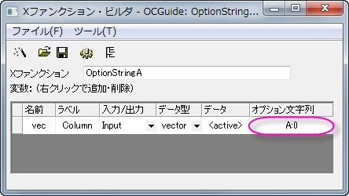
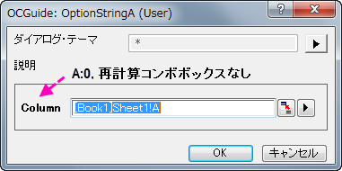

OptionStringA -d;と実行します。開いたダイアログでは、再計算コンボボックスは表示されません。 
再計算オプションは、Xファンクションの再計算モードの制御が可能です。デフォルトでは、Xファンクションが、入力または出力変数として、XYRange、XYZRange、vector、Column、matrix、MatrixObjectといったOriginオブジェクトタイプを含むとき、手動、自動、なしを再計算モードとして使用できます（デフォルトのモードは手動）。もし変数が入力と出力両方で使用されている場合、再計算モードは禁止され、再計算コンボボックスは非表示になります。
Xファンクションダイアログから再計算コンボボックスを隠します。
サンプル
OptionStringA -d;と実行します。開いたダイアログでは、再計算コンボボックスは表示されません。 デフォルト再計算モードをなしにセットします。このモードは入力、出力変数ともに利用可能です。
サンプル
OptionStringA1 -d;と実行します。開いたダイアログには、なしが選択された再計算コンボボックスが表示されます。 再計算モード付き出力列についてソートを許可する。出力変数のみに動作します。
サンプル
OptionStringA2 -d;と入力して実行します。OKボタンをクリックすると、以下のように鍵のアイコン付きの空の出力列が2列作成されます。再計算モードを許可しますが、Xファンクションダイアログ内の再計算コンボボックスは非表示になります。
ブラウザダイアログオプションコントロールはXファンクションダイアログにあるボタンで開く、ページ/グラフブラウザダイアログ内の設定をコントロールします。開いたダイアログのフィルタのためにも使用されます。Xファンクション グラフブラウザダイアログのサンプルを参照してください。
ダイアログが開くとページ/グラフブラウザ内の全てのページをソートします。
グラフブラウザから3Dグラフを除きます。
割り当て列指定から複合範囲を無効にします。例えば、XYRangeタイプで出力変数を取ります。 このオプション文字列が変数のために指定されていない場合、2つの出力列があり、1つはX指定、もう一方はY指定です。そうではない場合、両方ともデフォルトY指定を持つ2列になります。
非表示のステートを持つ新しいページを作成します。
Xファンクションを元に戻せないようにする
デフォルトでは、double型の変数が欠損値のときにこの変数は空のセルを表示します。このオプション文字列は「--」のような空の変数を表示するのに使用します。
範囲（Range）タイプの出力変数にのみ使用可能なオプション文字列です。もし、出力変数が<new>にセットされている場合、有効なOriginC範囲オブジェクトが作成されます。しかし、それに対する新しい列はありません。このオプションは、Xファンクション本体に出力範囲のための行と列を用意するのに使用します。
範囲（Range）タイプの出力変数にのみ使用可能なオプション文字列です。もし、出力変数が<new> にセットされている場合、入力範囲と同じ列数、行数で複製します。
MarkerInfoとButtonInfo XVariableに適用できます。セットすると非表示になります。
XVariableを出力するために適用します。セットすると、書き込み可能なチェックを抑制します。
任意のXVariableを適用します。セットするとダイアログからのスクリプト生成をサポートします。
9.0 から利用可能です。Page/Layer XVariableを出力するために適用します。セットすると、新しく作成したページを非表示にするかを決定するために別のXVariableコール"hide"の値をチェックします。
9.0 から利用可能です。グループ始まり（オプション文字列G）のXVariableを適用します。セットすると、XVariableが非表示の場合にすべてのブランチを非表示にしません。
E:V
値の真の値を保持するためにXファンクションウィザードとXファンクションバーで使用されます。最初の適用ボタンによって作成された先は、その後の適用ボタンで使用されます。
F:*6*
double型で数値を表示するためのフォーマット文字列を提供します。* （Originグローバル数値フォーマット設定）、.2（2桁）といった標準のLabTalkの数値フォーマット表記を使用できます。
FT:str1|str2
グラフからデータ選択のアクションフィルターのためのタグを指定します。データオブジェクトにタグstr1 または str2 を含む場合、メニューアイテムアクティブグラフページ/レイヤにすべてのプロットを追加するでデータが選択された時に無視されます。
サンプル
このサンプルでは、グラフから全てのデータが選択された時、タグ名TestCurves 付きのデータプロットを含めないようにFTオプション文字列を使用する方法です。
// XYRange出力のためのデータを置く vector vx, vy; vx.Data(1, 10, 1); vy = vx; oy.SetData(&vy, &vx); // 指定された名前はiオプション文字列 "FT" と同じである必要がある tag_columns_in_data_range(oy, "TestCurves"); // ソース範囲グラフ取得、グラフに結果をプロット vector<uint> vnIDs; if( iy.GetPlots(vnIDs) > 0 ) { DataPlot dp; dp = (DataPlot)Project.GetObject(vnIDs[0]); GraphLayer gl; dp.GetParent(gl); gl.AddPlot(oy); }
OptionStringFT -d; を入力して実行します。OKボタンをクリックしてソースワークシートにXY列を生成し、それをソースグラフにプロットします。
OptionStringFT -d;を実行し、Xファンクションダイアログを開きます。Input XY ブランチには、新しく出力されたデータプロットはありません。これは、このデータプロットのTestCurves というタグ名によるものです。
FV:varname はそれぞれの出力変数のための入力変数の名前を指定します。この変数のブック/シート/オブジェクトの情報がトレースされ、出力変数が<input>/<same>にセットされているときに出力変数と共有されます。例えば、3つのXYRangeをもつXファンクションを考えます。最初の2つは入力変数で最後の1つは出力変数です。このオプション文字列によって、ひとつの入力変数の名前が出力変数にセットされると、出力が<input> oまたは<same>に設定されている時に出力列は特定の入力列と同じになります。そうではない場合、出力列は1つ目の入力列と同じになります。
Xファンクション内の関連する変数をグループ化するために使用します。オプション文字列にフィールドに、グループの開始変数のためのG：グループ名を追加し、Gをグループの終了のための変数を追加します。
G:Group
グループの開始を指定します。デフォルトでは、グループのブランチは閉じています。最初からこのブランチを開いた状態にするには、ダイアログを開き、グループ名の前にG:-Group Name のような - を追加します。するとダイアログはブランチのステータスを記憶します。
G
グループの終了を指定します。
サンプル
OptionStringG -d;を実行します。 下図のようなダイアログが開きます。#include <ReportTree.h>
// Data Rangeオブジェクトからデータを取得 matrix mData; if( rng.GetData(mData) <= 0 ) { XF_THROW("No data is selected"); } // 各列の基本統計量を計算 vector vPoints, vSum, vSD; for(int index = 0; index < mData.GetNumCols(); index++) { vector vData; mData.GetColumn(vData, index); int nPoints; double dSum, dSD; ocmath_basic_summary_stats(vData.GetSize(), vData, &nPoints, &dSum, &dSD); vPoints.Add(nPoints); vSum.Add(dSum); vSD.Add(dSD); } // データ表を作成 int nID = 0; // ID は固有である必要がある ReportTable rTable = rt.CreateTable("Report", "Report Table", ++nID, 0, 1); rTable.AddColumn(vPoints, "N", ++nID, "Points", OKDATAOBJ_DESIGNATION_Y); rTable.AddColumn(vSum, "Sum", ++nID, "Sum", OKDATAOBJ_DESIGNATION_Y); rTable.AddColumn(vSD, "SD", ++nID, "SD", OKDATAOBJ_DESIGNATION_Y); // どのフォーマットも指定しないように属性を0とします // oc_const.hで定義された多くのビット GETNBRANCH_* は表の表示フォーマットをセットするため rTable.SetAttribute(TREE_Table, GETNBRANCH_TRANSPOSE);
OptionStringH -d; を実行し、ダイアログを開きます。ダイアログで、 Input Data としてすべての列が選択され、Reportは<new>であることを確認します。OKボタンをクリックするとレポートシートが標準のフォーマット(H:0)で表示されます。OptionStringH -d;を実行します。ここではレポートシートが階層表フォーマット(H:1)で表示されます。入力データの範囲を制限し、インタラクティブコントロールの動作を変更します。このオプション文字列は以下の入力データタイプの時に操作します：Range、XYRange、XYRangeComplex、XYZRange、vector、vector<string>、vector<complex>
第1サブレンジの複数データ選択を許可します。
第2サブレンジの複数データ選択を許可します。
第3サブレンジの複数データ選択を許可します。
すべてのサブレンジの複数データ選択を許可します。
1つのデータセットに限定します。
Yエラーのサポート。XYRangeのみ
Rangeにラベルエリアをサポートオプション文字列を使用すると、出力範囲は実行前にデータはクリアされません。これはI:0x00040000と同様です。
出力変数のポップアップリストから<input> オプションがなくなります。
出力変数のポップアップリストから<new> オプションがなくなります。
出力変数のポップアップリストから(<input>,<new>) オプションがなくなります。XYRangeのみ。
ポップアップメニュー用のボタンを取り除きます。
インタラクティブボタンを取り除きます。
ベクトルと列タイプのみで入力変数に対して有効です。データ選択のための文字列が得られた場合、列は、インデックスによって識別されるが、ショートネームでは識別されません。
このオプション文字列は、初期化中にベクトル変数のみがY列に使用されるようにします。
列ブラウザボタンを表示します。
変数を書き込み不可にセットします。I:0x0400 と I:0x0800 の同様に動作します。
初期化中またはインタラクティブな瞬間に行の選択を取り除きます。変数型：Column, Range, XYRange
列表記でシート全体の範囲の文字列を置き換えます。例えば、Book1には、2列あるShee1がある場合、範囲文字列[Book1]Sheet1 はBook1]Sheet1!1:2となります。
このオプション文字列は、出力範囲が実行終了前にクリアされないようにします。このオプション文字列がないと、入力データ範囲内にオーバーラップが内場合に、出力範囲の列は字算に新しいデータを使用してクリアされます。
サンプル
orng = irng;
OptionStringI -d; コマンドを実行し、inputとしてA列、outputとしてB列を指定し、OKボタンをクリックします。結果列であるBにも行番号が入力されます。
全ての列を対話型のポップアップメニューで非表示にします。
アクティブグラフレイヤに選択がなく、範囲変数が<active>を使用してセットされている場合、範囲変数はアクティブレイヤ内の全てのプロットにセットされます。
出力Xとしてサンプリング間隔を使用します。
既存の列またはプロットが、対話型のポップアップメニューを表示されます。
出力XYRangeが<auto>を使用してセットされている場合、このオプションは新しいX列を作成します。
行範囲は無視され、1つのブロック範囲のみ有効です。選択がない、あるいは、1つの単一セルのみが選択である場合、選択はすべてのワークシートと解釈されます。
インデックスの代わりに最初の最後のX値を使用して範囲文字列を作成します。シンタックスは、[BookName]SheetName!ColName[xFirstValue:LastValue]これは単調なデータに非常に便利です。
範囲変数はファクターと重みを持ちません。
M:m-n
文字列変数が複数行のテキストをサポートするようにします。文字列変数が非表示の場合、テキストのｍ行がサポートされ、拡張した場合ｎ行がサポートされます。編集コントロールの右下隅でサイズを変更するには、行範囲文字列に*を追加します。
出力オブジェクトのデフォルト名を指定します。
N: Book:="Book Name" Sheet:="Sheet Name"
N: Book:="Book Name" Sheet:="Sheet Name" X:="Object Name"
N: "Name"
N: X:="X Name" Y:="Y Name"
N: X:="X Name" Y:="Y Name" Z:="Z Name"
N: Book:="Book Name" Sheet:="Sheet Name"
バージョン2021b以降、Originは出力名の置換表記をサポートしています（例：N:"Stats of %W"）。変数は、User Files\Origin.iniの[OutputLongName]セクションに次のように記載されています。
実行に成功した後の出力変数のアクションを指定します。
オブジェクトが非表示または別のフォルダ内にある場合に関係なく対応するOriginオブジェクトをアクティブにします。
ワークブックがアクティブウィンドウの時のみ、対応するOriginオブジェクトをアクティブにします。
対応するOriginオブジェクトをアクティブにしません。
Xファンクションダイアログで変数が編集可能かどうか指定します。
P:1 はデフォルトのオプション文字列です。パラメータの変更を経由して再びXファンクションダイアログを立ち上げる時、このオプション文字列を使用して、列、ワークシートなどのOriginのオブジェクトタイプである出力変数は、編集できないようになります。他のタイプの変数でそのようにする場合、オプション文字列をP:0として指定する必要があります。
ラベルを表示するだけで、編集可能なフィールドは非表示です。通常はヒントテキストを表示するために使用されます。
Xファンクションダイアログでセパレータとして変数を表示します。文字列タイプのみに有効です。
サンプル
out = in + var; を入力して、コンパイルボタンをクリックします。OptionStringP -d; を実行します。開いたダイアログで、列AをInput Column、列BをOutput Columnとして選択します。OKボタンをクリックすると、結果が生成され、B列に格納されます。
OptionStringP -d;により開くダイアログとの違いは下図の通りです。LabTalkスクリプトから呼び出したXファンクション内のコンボボックスの値を制御するのに使用します。ダイアログには影響しません。
制約はありません。コンボボックスのリストで定義された値に加えて、他の値もLabTalkのスクリプトを使用して、コンボボックスの変数に割り当てることができます。
デフォルトのオプション文字列です。コンボボックスのリストで定義された値のみ、他の値もLabTalkのスクリプトを使用して、コンボボックスの変数に割り当てることができます。
サンプル
OptionStringR x1:=5; と入力して実行すると、次のエラーが表示されます：#Command Error!OptionStringR x1:=5; と入力して実行すると、エラーが表示されなくなります。入力変数のためのデフォルトデータオブジェクトを定義します。Rangeタイプの変数にのみ使用可能なオプション文字列です。
アクティブワークシートの選択されている全ての列をデータ範囲とします。
アクティブ行列ウィンドウ内の、最初の行列オブジェクトまたは、アクティブワークシートの最初の列をデータ範囲として選択します。
<active>オプションは、行列オブジェクト以外を取得するようにします。出力変数では、<active> オプションは<new>と置換えられ、行列ページを作成します。
コンボボックスのアイテム値を特別な値に置き換えます。例えば、制御列でBegin|Mid|End 文字列をとおしてint型の変数がコンボボックスにセットされた場合、このコンボボックスのデフォルトのアイテム値は、それぞれ0、1、2です。変数に対して、オプショ文字列SV:1|5|-1 iが使用されている場合、コンボボックス内に返るアイテム値はそれぞれ1、5、-1となります。
Xファンクションダイアログテーマファイルで変数が記憶されるかどうか指定します。このオプション文字列はツリービューでのテーマ選択の間有効で、これがデフォルト設定です。
指定したテーマが選択された場合、テーマ値は変数値として使用されます。
テーマが選択されていても、テーマ値を変数値として使用しません。
指定したテーマが選択された場合、テーマ値と属性の両方が変数値として使用されます。このオプションは、XYRangeやImageなどのOrigin内部のオブジェクトで主に使用されています。
出力変数が必要かどうかを指定します。このオプション文字列は、複数出力変数のあるXファンクションに対して有効です。
出力変数のために選択されたチェックボックスを追加します。これはデフォルトオプションです。
出力変数のために選択されていないチェックボックスを追加します。
出力変数のためにチェックボックスを追加しません。
サンプル
vector vv; vv.Data(1,10,1); if( xx ) // xx変数を出力するかチェック { xx = vv; } if( yy ) // yy変数を出力するかチェック { yy = vv; } zz = vv;
foreach(TreeNode subnode in trGetN.Children) { string strVarName = subnode.tagName; int nUStatus, nOutput; // 出力変数かチェック if((subnode.GetAttribute(STR_XF_VAR_IO_ATTRIB, nOutput) && IO_OUTPUT == nOutput)) { // 出力チェックボックスステータスをチェック if(subnode.GetAttribute(STR_ATTRIB_DYNACONTROL_USE_CHECK, nUStatus)) { switch(nUStatus) { case 1: printf("%s variable has Output checked check box.\n" , strVarName); break; case 0: printf("%s variable has Output unchecked check box.\n" , strVarName); break; } } else { printf("%s variable NOT Output check box.\n", strVarName); } } }
OptionStringU -d; を実行し、ダイアログはデフォルトのままOKボタンをクリックします。 これにより、2列のワークシートが作成され、コマンドウィンドウに、それぞれのチェックボックスステータスが印字されます。
Xファンクションダイアログで変数が見えるかどうか指定します。
ダイアログで変数は見えません。
ダイアログで変数は見えます。
LabTalkスクリプトを使用するとき、変数は見えません。
入力変数の隣にチェックボックスを追加し、それが編集可能かどうか指定します。シンタックスは、Z:State|Label|Behavior です。
サンプル
TreeNode trInt = trGetN.nn; int nAutoType = octree_get_auto_support(&trInt); switch(nAutoType) { case -1: out_str("Auto check box of int Type control is unchecked"); break; case 0: out_str("No auto check box for int Type control"); break; case 1: out_str("Auto check box of int Type control is checked"); break; }
OptionString -d; を実行すると、下図のようなダイアログが開きます。TestOKチェックボックスのステータスを変更するとコマンドウィンドにこのチェックボックスのステータスについてメッセージが表示されます。